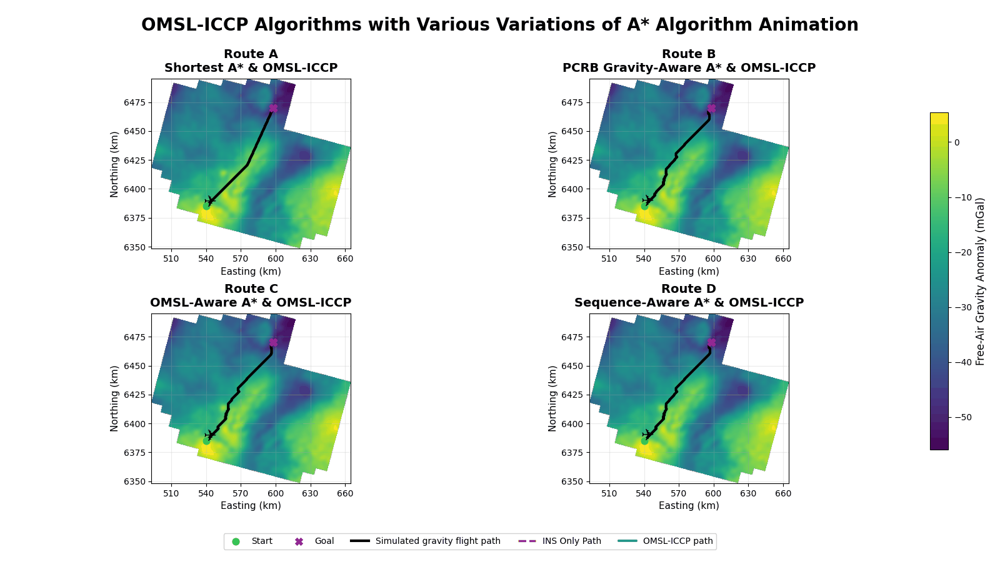

Gravity Aided Navigation in GNSS Denied Environments
A research project investigating how gravity data, gravity map matching, and different gravity aware routes can support navigation when GNSS is unavailable. This is particularly important in situations where GNSS jamming or spoofing may prevent reliable positioning. An Inertial Navigation System can continue to provide navigation without GNSS, but its position error increases over time. This research investigates whether gravity measurements and gravity based route planning can be used to help correct this INS drift and improve navigation performance.
Project Overview
This project simulates an aircraft travelling through the Patterson Lake airborne gravity survey area. The aircraft follows a known true path and gravity measurements are simulated along this route. An INS only path is then created with increasing navigation error to show how the INS can continue to drift when GNSS corrections are no longer available.
Gravity Aided Navigation methods are then used to compare the simulated gravity measurements with stored gravity maps and correct the INS position. The first part of the research tests TERCOM map matching using the Free Air gravity anomaly and then compares this with a second TERCOM method that uses both the Free Air gravity anomaly & the First Vertical Derivative gravity layer.
The project also tests an implementation of OMSL-ICCP as another gravity matching method. A* route planning is then added to test whether choosing routes that travel through different gravity regions can affect the performance of Gravity Aided Navigation.
TERCOM Gravity Aided Navigation
This animation shows the known true aircraft path, the drifting INS only path, and the two TERCOM Gravity Aided Navigation solutions. The first method uses only the Free Air gravity anomaly for map matching. The second method uses both the Free Air gravity anomaly & the First Vertical Derivative gravity layer to test whether adding another gravity layer can provide more information during map matching and improve the position correction.
INS Only: Over the common evaluation interval, the INS-only path had an RMSE of approximately 4.603 km.
Gravity Only TERCOM: Using the Free Air gravity anomaly for map matching reduced the RMSE to approximately 1.105 km.
Free Air & Vertical Gravity Gradient TERCOM: Using both the Free Air gravity anomaly & the First Vertical Derivative gravity layer reduced the RMSE further to approximately 1.071 km.
Overall, the two map TERCOM method reduced the INS only RMSE by approximately 76.7%. It also gave an additional improvement of approximately 3.1% compared with using the Free Air gravity anomaly alone.
These results show that gravity map matching was able to greatly reduce the simulated INS drift. Adding the First Vertical Derivative gravity layer also improved the result, although the improvement compared with Gravity Only TERCOM alone was smaller.

OMSL-ICCP with A* Route Planning
The second animation tests whether the route travelled through the gravity field can affect Gravity Aided Navigation performance. Four different A* routes are created using different ways of including gravity information during route planning. The same OMSL-ICCP gravity matching method is then run along each route so that the navigation results can be compared.
- Route A - Shortest A*: Route A uses a standard A* algorithm and mainly searches for the shortest route between the selected start and goal locations. This route is used as the baseline for the other A* routes.
- Route B - PCRB Gravity-Aware A*: Route B adds gravity information into the A* cost using a Posterior Cramer-Rao Bound based approach. The goal is to guide the aircraft through gravity regions that are expected to provide better positioning information.
- Route C - OMSL-Aware A*: Route C uses local gravity distinctiveness when selecting the path. The goal is to travel through gravity regions that may be easier to identify during OMSL-ICCP gravity matching.
- Route D - Sequence-Aware A*: Route D looks at the gravity information along a sequence of locations instead of only looking at one location at a time. This was used to better represent how OMSL-ICCP uses a sequence of gravity measurements during matching.
Route A: Route A travelled approximately 109.0 km and had an OMSL-ICCP RMSE of approximately 1.307 km. This route had the lowest overall RMSE out of the four routes.
Route B: Route B travelled approximately 113.2 km and had an OMSL-ICCP RMSE of approximately 1.528 km. The final position error was approximately 1.110 km.
Route C: Route C travelled approximately 112.8 km and had an OMSL-ICCP RMSE of approximately 1.701 km. Even though the overall RMSE was higher, Route C had the lowest final position error at approximately 1.059 km.
Route D: Route D travelled approximately 113.2 km and had an OMSL-ICCP RMSE of approximately 1.493 km. Out of the three gravity aware routes, Routes B, C, and D, Route D had the lowest overall RMSE.
Overall, Route A still had the lowest OMSL-ICCP RMSE even though it was the standard shortest A* route. Route D performed the best out of the gravity aware routes, while Route C had the lowest final position error. These results show that changing the route based on gravity information can affect the navigation results, but these routes did not always perform better than the shorter baseline route.
